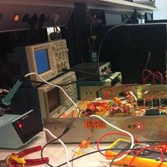
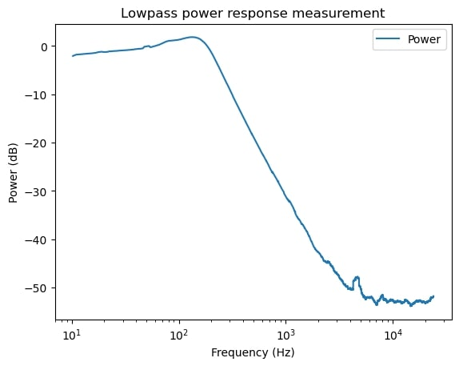
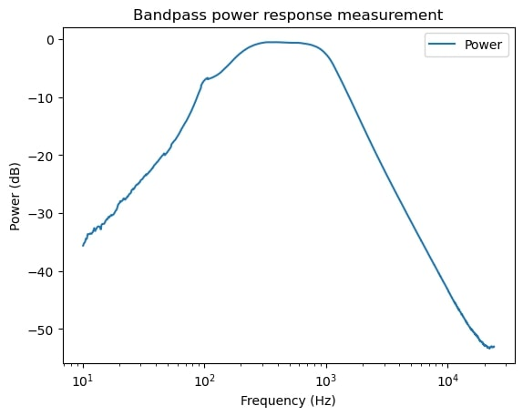
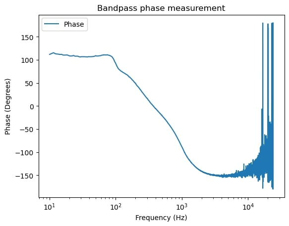
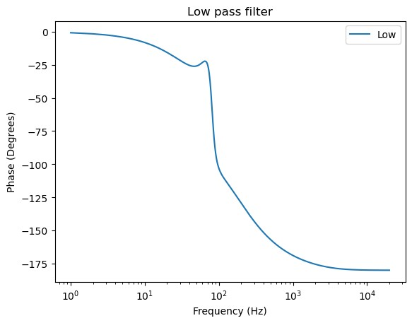

Audio amplifier and filter

With a group we built an audio amplifier and filter. The input is the 3.5mm jack of for example a PC, and the output goes into a speaker system. Our amplifier splits the audio signal into a low, mid and high component, amplifies them and then sends them to the speakers. If you were to buy a good amplifier in a shop it would cost you at least 100$, but ours was made with about 20$ of components. The filter had to be chosen so that the correct audio frequencies were sent to the low, mid and high speaker. We determined these frequencies by doing acoustic measurements and circuit simulations. Below are some plots i made of these measurements and simulatons using python.
   